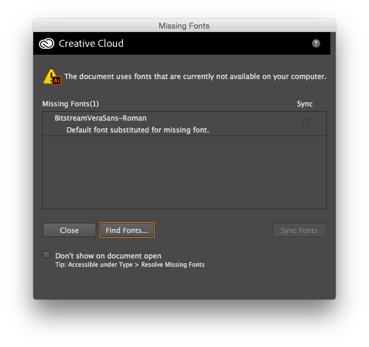

Opening your matplotlib graph in Adobe Illustrator
Once you’ve exported from matplotlib, you can open up your PDF in Illustrator.
Step 1: Ignore the font warning
The very first thing that will happen is a warning:
The document uses fonts that are currently not available on your computer.
Missing fonts(1)
BitstreamVeraSans-Roman
Default font substituted for missing font

This is because matplotlib uses the BitstreamVeraSans-Roman font which isn’t installed on your computer in a place where Illustrator can get to it. This doesn’t really matter because you’re going to change the font anyway!
Ignore it and click Close.
Tip: You could also check the Don’t show on Document open box so you won’t see this again.
Step 2: Remove clipping masks
When you first open your image in Illustrator, you won’t be able to edit it: it’s covered in something called clipping masks. Let’s remove these clipping masks!
- Click something on your image - some text, a circle, a line, etc. You just want your graphic selected (a blue box will show up around it).
- Go to the
Objectmenu, thenClipping Mask, thenRelease - Keep doing
Object > Clipping Mask > Releaseuntil you can’t selectReleaseany more - all of the clipping masks are gone!
If you like shortcut keys, you can use
Command+Ato select everything, then pushCommand+Alt+7again and again to remove the clipping masks.
Note: This is going to cause some issues if you’ve customized your plot in certain ways (start point of bars going offscreen, etc). Unfortunately I don’t have a solution other than “just resize your bars to where they should go.” It mostly works fine, though.
Step 3: Do whatever you want
You’re good to go now.